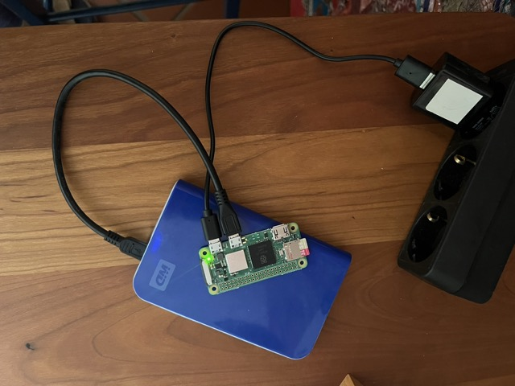

Creating a SciOp Research Data Rescue Node with a Raspberry Pi
This tutorial has been tried out on a Raspberry Pi Zero 2 W. This is the cheapest, smallest and most efficient Raspberry Pi that can run a full Linux distribution, and it has enough power to run a small NAS with an external HDD. However, the same steps should also work on other Raspberry Pi models, such as the Raspberry Pi 3 or 4, which have more processing power and memory.
We will create a “headless” machine, which means it does not have a monitor or keyboard attached, but can be accessed via SSH. This is ideal for a small NAS that runs in the background and can be accessed remotely.

0. Shopping list
Recycle existing hardware as much as possible!
- Raspberry Pi Zero 2 W: ~15 €
- A micro-SD card with a minimal capacity of 4 GB: ~5 €
- Note: The RPi cannot boot from an external HDD, so you need a micro-SD card as internal storage for installing the OS and necessary packages.
- An external 2.5” HDD or SSD
- A cable that connects the HDD to the micro-USB port of the RPi
- A USB power supply with 5V and at least 2A output: ~5 €
- Note: It has been reported that some setups needed 5.3V to have a stable power supply during HDD startup.
1. Install the OS on the micro-SD card
Download and start the Raspberry Pi Imager.
- Select
Raspberry Pi Model–>Raspberry Pi Zero 2 W - Select
OS–>Raspberry Pi OS (other)–>Raspberry Pi OS Lite (64-bit). This should have ~0.4 GB.
In the next step, you should:
- Configure WiFi
- Configure the hostname
- In this tutorial we use
HiveSeedas hostname.
- In this tutorial we use
- Enable SSH (either via password or SSH key)
- Add a user and a password
- In this tutorial we use
pias username andraspberryas password, but you should change that to something more secure.
- In this tutorial we use
Put the prepared micro-SD card into the RPi, power on, and log in via SSH. Your user name and password are the ones you configured in the previous step:
ssh pi@HiveSeed.localWhen you are logged in, you first should update the system:
sudo apt update
sudo apt upgrade -yOptionally, you can enable SSH key authentication for a more secure and convenient login:
mkdir ~/.ssh
chmod 700 ~/.ssh
nano ~/.ssh/authorized_keysCopy your public SSH key into the authorized_keys file. You can print the key with the following command in a terminal on your local machine:
cat ~/.ssh/id_rsa.pubThen paste the key into the authorized_keys file on the RPi. Save and exit the file editor (in nano, press CTRL + X, then Y to confirm saving, and ENTER to exit).
2. Enable the external HDD
Connect the external HDD to the RPi via USB (be careful: there is one micro-USB port for powering the RPi Zero 2 and one for data transfer - they are not exchangeable).
Show the connected storage devices:
sudo fdisk -lThe output first shows multiple partitions on the internal micro-SD card, and then the external HDD. In our case, we attached a 500GB HDD and see this output:
[...]
Disk /dev/sda: 465.76 GiB, 500107862016 bytes, 976773168 sectors
Disk model: 5000BMV External
Units: sectors of 1 * 512 = 512 bytes
Sector size (logical/physical): 512 bytes / 512 bytes
I/O size (minimum/optimal): 512 bytes / 512 bytes
Disklabel type: gpt
Disk identifier: 5A63CF10-2BE1-499E-818D-28AB87D27648
Device Start End Sectors Size Type
/dev/sda1 40 409639 409600 200M EFI System
/dev/sda2 411648 976510975 976099328 465.4G Microsoft basic dataIn this example, the device name of the external HDD is /dev/sda, but it might be different on your system. Make sure to replace /dev/sda with the correct device name in the following commands.
Create a new partition table
The previous formatting of our HDD was done with Windows, so it has a Microsoft basic data partition type. It also has an EFI System partition, which is not needed for our use case.
Next, we will reformat it to use it with the RPi. This will erase all data!
sudo fdisk /dev/sdaThis utility allows you to create, delete, and modify partitions on the disk. Follow these steps:
- Press
pto print the current partition table. - Press
dto delete all existing partitions. You might need to do this multiple times if there are multiple partitions. - Press
nto create a new partition.- Press
Enterthree times to accept the default partition number, the default first sector, and the default last sector.
- Press
- Press
pagain to check the new partition table. - Up to this step, nothing has been written to the disk yet - we just planned the partioning steps.
- You can still exit without saving changes by pressing
q. - If you are satisfied with the new partition table and ready to erase all data, press
wto write the changes to the disk and exit.
- You can still exit without saving changes by pressing
If you re-run sudo fdisk -l, you should see the new partition table with a single partition. In our case, it looks like this (note the Linux filesystem type on dev/sda1):
Device Start End Sectors Size Type
/dev/sda1 2048 976773119 976771072 465.8G Linux filesystemFormat the new partition
HIVESEEDSTORAGE is the name of the partition we will create - you can choose a different name if you like.
sudo mkfs.ext4 -L HIVESEEDSTORAGE -E lazy_itable_init=0,lazy_journal_init=0 /dev/sda1This formatting avoids the ext4lazyinit process, which consumes a low I/O bandwidth (approx. 11-13 Mb/s) in idle mode.
Finally, mount the drive (only then it is accessible):
# create a mount point on the RPi SD card
sudo mkdir /mnt/HDD1
# mount the partition to that mount point
sudo mount /dev/sda1 /mnt/HDD1Automatically mount the HDD on boot
To make the mount persistent across reboots, you can add an entry to the /etc/fstab file. For that, we need to find the UUID of the HDD:
sudo blkid -o listIn my case, the output looks like this:
device fs_type label mount point UUID
--------------------------------------------------------------------------------------------------------------------
/dev/mmcblk0p1 vfat bootfs /boot/firmware EC36-4DE1
/dev/mmcblk0p2 ext4 rootfs / d4cc7d63-da78-48ad-9bdd-64ffbba449a8
/dev/sda1 ext4 HIVESEEDSTORAGE (not mounted) 89d8ab88-7a9e-495e-8dbb-3e9423eea43dCopy the UUID and add this line (with your UUID) to /etc/fstab:
UUID=89d8ab88-7a9e-495e-8dbb-3e9423eea43d /mnt/HDD1 ext4 defaults 0 2
sudo nano /etc/fstabRun sudo reboot, re-login via SSH and sudo blkid -o list to verify that the HDD is automatically mounted on boot.
3. Install the qbitTorrent client
To install the qbitTorrent client, we roughly follow this guide. First, install the necessary packages:
sudo apt install qbittorrent-nox -yThe -nox option installs the headless version of qbitTorrent, which is suitable for running on a server without a graphical user interface. You can still access it via a web interface. The -y option automatically answers “yes” to any prompts during the installation.
You can start the qbitTorrent client with the following command:
qbittorrent-noxIt shows the initial setup instructions, including the default username and password (usually admin / adminadmin). It also tells you the URL to access the web interface, which is usually http://<your_rpi_ip>:8080.
You can now open a browser and navigate to the qbitTorrent web interface, in my case http://hiveseed.local:8080
Create a background service for the qbitTorrent client
When you run the command qbittorrent-nox, it starts the qbitTorrent client in the foreground, which means it blocks the terminal session. This is fine for testing, but not for a production setup.
In the terminal, you see that the current session is “blocked” while the client is running (you can exit the client with Ctrl + C). But we want the client to run in the background, so we can use the terminal for other commands, and also that it continues to run after we log out from the SSH session. To do that, we need to …
- Create a new user for the client to operate under (we’ll call it
qbuser). Furthermore, we put our main userpiinto theqbusergroup, so that it can access the files created by the qbitTorrent client:
sudo useradd -r -m qbuser
sudo usermod -a -G qbuser pi
#verify the group membership: you should see "qbuser" in the list of groups for the user "pi"
groups pi- Add a new service that runs the qbitTorrent client in the background. For that, we use the nano editor to create a new systemd service file:
sh sudo nano /etc/systemd/system/qbittorrent.service
Add the following content to that file (you can copy and paste it into the nano editor):
[Unit]
Description=qBittorrent
After=network.target
[Service]
Type=forking
User=qbuser
Group=qbuser
UMask=002
ExecStart=/usr/bin/qbittorrent-nox -d --webui-port=8080
Restart=on-failure
[Install]
WantedBy=multi-user.targetWith everything entered, save the file by pressing CTRL + X, then Y(Yes), followed by the ENTER key.
Start the qbitTorrent service and enable it to start on boot:
sudo systemctl start qbittorrent
sudo systemctl enable qbittorrentConfiguring qbitTorrent for SciOp
First, we create the necessary directories on the external HDD and make them accessible for the qbuser:
sudo mkdir /mnt/HDD1/Downloads
sudo mkdir /mnt/HDD1/Downloads/temp
sudo mkdir /mnt/HDD1/torrentfiles
sudo chmod -R 777 /mnt/HDD1/Downloads(We use a permissive 777 permission here for simplicity, but you might want to adjust it to be more secure, e.g. 775 or 770, depending on your use case. As SciOp only shares public research data, this should be fine for now.)
TODO:
- In the qbittorrent web interface, set the directories to
/mnt/HDD1/Downloads(Downloads),/mnt/HDD1/Downloads/temp(incomplete downloads), and/mnt/HDD1/torrentfiles(torrent files). - Limit the disk quota to, say, 80% of the HDD size
Misc
Expansion boards / Housings
- Geekworm X301 2.5” SATA HDD/SSD NAS Expansion Board
- Thingiverse:
- Raspberry Pi Zero W + 2.5” HDD: Be careful, this is for the Zero (without “2”) - does it have a different form factor?